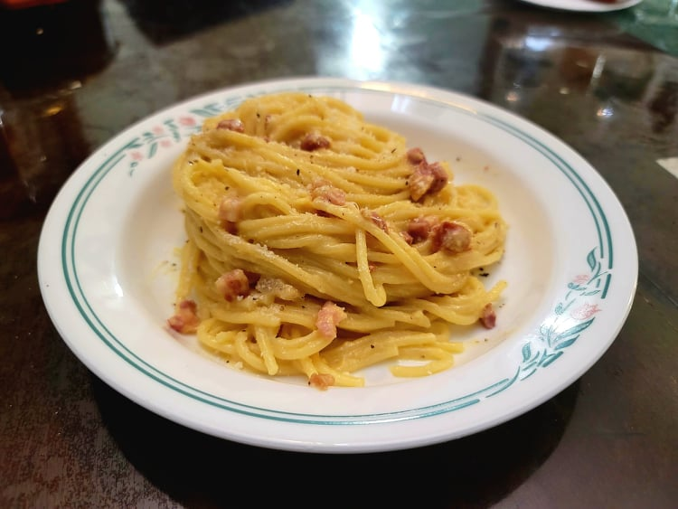

Carbonara

Ingredients:
- 1 lb Dried spaghetti or Dried bucatini
- 1/2 lb Guanciale OR Pancetta
- 4 Eggs + 1 Egg yolk
- 1 cup Pecorino OR 1/2 cup Pecorino + 1/2 cup Parmesan
- Black pepper, freshly ground, to taste
- Salt, to taste
Instructions:
- Bring a large pot of salted water to a boil. Add the pasta to the water and let cook for 10-11 minutes or until al dente.
- While the pasta cooks, prepare the sauce. In a large bowl, whisk the eggs until there are no more white streaks. Then whisk in the cheese and black pepper until thoroughly mixed.
- About 4-5 minutes before the pasta is finished cooking, begin to cook the pork over medium to high heat. Cook until crispy. Remove from heat.
- As soon as the pasta is finished cooking, transfer the pasta and a ladle of pasta water from the pot to the pan with the pork and briefly toss together. Ladle in another scoop of water into the sauce bowl and whisk together. Pour the sauce into the pan. Toss and mix the pasta until the sauce thickens and the eggs are cooked, adding in more pasta water if needed. Taste and add salt or pepper to taste.